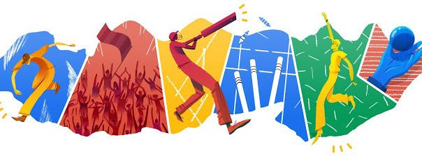

<mat-sidenav-container class="sidenav-container">
  <mat-sidenav #drawer class="sidenav" fixedInViewport="true"
    [attr.role]="(isHandset$ | async) ? 'dialog' : 'navigation'" [mode]="(isHandset$ | async) ? 'over' : 'side'"
    [opened]="!(isHandset$ | async)">
    <mat-toolbar>
      
    </mat-toolbar>
    <mat-nav-list>
      <a mat-list-item [routerLink]="['/login']">Login</a>
      <a mat-list-item [routerLink]="['/register']">Register</a>
    </mat-nav-list>
  </mat-sidenav>
  <mat-sidenav-content>
    <mat-toolbar color="primary">
      <button type="button" aria-label="Toggle sidenav" mat-icon-button (click)="drawer.toggle()"
        *ngIf="isHandset$ | async">
        <mat-icon aria-label="Side nav toggle icon">menu</mat-icon>
      </button>
      <span>Inferno Cricket</span>
    </mat-toolbar>
    <!-- <div class="col-md-6" id="img1">
      
    </div> -->
  </mat-sidenav-content>
</mat-sidenav-container>